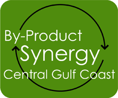

PEP Wins EPA’s 2011 Gulf Guardian Award
The cumulative economic and environmental impacts of the first year of the BPS Project include, but are not limited to:
- $1.6 million in company savings; $3.2 million local economic impact;
- 8,200 tons of material diverted from landfills, wastewater treatment plants and other disposal sites; 5,300 tons of aciddiverted from waste treatment plants; and
- More than 8,800 tons of CO2 emissions were avoided.
Current BPS Participants
Alabama Power Company
Arkema
BASF
E.I. Dupont
Evonik Degussa
ExxonMobil
Huntsman Advanced Materials
Mitsubishi Polysilicon
Oil Recovery
Southern Ionics
University of South Alabama
Veolia Environmental Services
Currently Recruiting 25 Companies for Project Phase II
Mobile City Council Recognizes PEP and BPS
On June 29, 2010, the Mobile City Council and Mayor Sam Jones awarded a certificate of recognition to PEP and the 12 forward thinking companies in By-Product Synergy Central Gulf Coast for the project's success and the resulting environmental and economic benefits to the community.
Background on BPSIn May 2009, as part of its mission to promote a sustainable Alabama Gulf Coast, Partners for Environmental Progress (PEP) launched its By-Product Synergy Central Gulf Coast (BPS CGC) project to achieve significant economic benefits for participating companies while simultaneously advancing environmental protections. Using a process developed by the U.S. Business Council for Sustainable Development, PEP formed adiverse network of companies to actively seek opportunities to turn one company’s wasteor by-product into raw materials for another. This has resulted in “win-win” projects that will enhance the region’s triple bottom line by providing economic, environmental and social benefits.
Local industry is committed to making a significant, positive impact on the region’ssustainability. BPS CGC puts in place a system where businesses can constantly networkand systematically review opportunities to reduce their environmental footprint. This typeof innovation and collaboration can only help recruit like-minded, environmentallyprogressive new industry.
BPS CGC is the practice of matching under-valued waste or by-product streams with potential users, helping to create new revenues or savings for the companies involved while simultaneously addressing social and environmental impacts. Synergies are not limited to material flows but can include energy, transportation services and best practices.
During the past year, the 12 participating entities met in a series of workshops to reviewand analyze product streams. An experienced technical team, headed by Dr. JohnSteadman, Dean of the College of Engineering, University of South Alabama,categorized, analyzed and helped identify priority potential synergies that would becommercially viable and environmentally significant. Action plans were developed toaddress technical, regulatory or other barriers.
First Project Phase is a SuccessThe projects successful first year is a result of the leadership of PEP, the participation of a variety of local industry partners and the creativity of the engineers, operators and managers who came together seeking innovative solutions. The cumulative economic and environmental impacts of the BPS project, include, but are not limited to:
- $1.6 million in company savings; $3.2 million local economic impact;
- 8,200 tons of materials from landfills, wastewater treatment plants and other
disposal sites; 5,300 tons of acid diverted from waste treatment plants; and
- More than 8,800 tons of CO2 emissions were avoided.
PEP is currently recruiting for 20 additional companies. If you are interested in turning waste into profit, please contact Jennifer Denson, 251-345-7269 or jdenson@pepmobile.org.
Mobile County Commission Honors BPS CGC
On September 22, 2011, the Mobile County Commission passed a resolution recognizing PEP’s efforts topromote a sustainable Alabama Gulf Coast through its project By-Product Synergy Central Gulf Coast.PEP executive director, Jennifer Denson, made a brief presentation about BPS and showed a short videofrom the EPA award ceremony that highlighted the PEP project. The Commissioners commended PEPand the 12 participating companies for the economic and environmental success of BPS and it’s first placeGulf Guardian Award